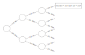

9 Probability Theory Part I (continued)
9.1 The special case of independence
A key concept in probability and statistics is that of the independence of two events in which we are interested. Two events are said to be “independent” when one of them does not have any apparent relationship to the other. If I flip a coin that I know from other evidence is a fair coin, and I get a head, the chance of then getting another head is still 50-50 (one in two, or one to one.) And, if I flip a coin ten times and get heads the first nine times, the probability of getting a head on the tenth flip is still 50-50. Hence the concept of independence is characterized by the phrase “The coin has no memory.” (Actually the matter is a bit more complicated. If you had previously flipped the coin many times and knew it to be a fair coin, then the odds would still be 50-50, even after nine heads. But, if you had never seen the coin before, the run of nine heads might reasonably make you doubt that the coin was a fair one.)
In the Washington Commanders example above, we needed a different set of buckets to estimate the probability of a nice day plus a win, and of a nasty day plus a win. But what if the Commanders’ chances of winning are the same whether the day is nice or nasty? If so, we say that the chance of winning is independent of the kind of day. That is, in this special case,
\[ P(\text{win | nice day}) = P(\text{win | nasty day}) \text{ and } P(\text{nice day and win}) \]
\[ = P(\text{nice day}) * P(\text{winning | nice day}) \]
\[ = P(\text{nice day}) * P(\text{winning}) \]
Note
See section Section 8.13 for an explanation of this notation.
In this case we need only one set of two buckets to make all the estimates.
Independence means that the elements are drawn from 2 or more separate sets of possibilities . That is, \(P(A | B) = P(A | \ \hat{} B) = P(A)\) and vice versa.
In other words, if the occurrence of the first event does not change this probability that the second event will occur, then the events are independent.
Another way to put the matter: Events A and B are said to be independent of each other if knowing whether A occurs does not change the probability that B will occur, and vice versa. If knowing whether A does occur alters the probability of B occurring, then A and B are dependent.
If two events are independent, the multiplication rule simplifies to \(P(A \text{ and } B) = P(A) * P(B)\) . I’ll repeat once more: This rule is simply a mathematical shortcut, and one can make the desired estimate by simulation.
Also again, if two events are not independent — that is, if \(P(A | B)\) is not equal to \(P(A)\) because \(P(A)\) is dependent upon the occurrence of \(B\), then the formula to be used now is, \(P(A \text{ and } B) = P(A | B) * P(B)\) , which is sufficiently confusing that you are probably better off with a simulation.
What about if each of the probabilities is dependent on the other outcome? There is no easy formulaic method to deal with such a situation.
People commonly make the mistake of treating independent events as non-independent, perhaps from superstitious belief. After a long run of blacks, roulette gamblers say that the wheel is “due” to come up red. And sportswriters make a living out of interpreting various sequences of athletic events that occur by chance, and they talk of teams that are “due” to win because of the “Law of Averages.” For example, if Barry Bonds goes to bat four times without a hit, all of us (including trained statisticians who really know better) feel that he is “due” to get a hit and that the probability of his doing so is very high — higher that is, than his season’s average. The so-called “Law of Averages” implies no such thing, of course.
Events are often dependent in subtle ways. A boy may telephone one of several girls chosen at random. But, if he calls the same girl again (or if he does not call her again), the second event is not likely to be independent of the first. And the probability of his calling her is different after he has gone out with her once than before he went out with her.
As noted in the section above, events A and B are said to be independent of each other if the conditional probabilities of A and B remain the same . And the conditional probabilities remain the same if sampling is conducted with replacement .
Let’s now re-consider the multiplication rule with the special but important case of independence.
9.1.1 Example: Four Events in a Row — The Multiplication Rule
Assume that we want to know the probability of four successful archery shots in a row, where the probability of a success on a given shot is .25.
Instead of simulating the process with resampling trials we can, if we wish, arrive at the answer with the “multiplication rule.” This rule says that the probability that all of a given number of independent events (the successful shots) will occur (four out of four in this case) is the product of their individual probabilities — in this case, 1/4 x 1/4 x 1/4 x 1/4 = 1/256. If in doubt about whether the multiplication rule holds in any given case, however, you may check by resampling simulation. For the case of four daughters in a row, assuming that the probability of a girl is .5, the probability is 1/2 x 1/2 x 1/2 x 1/2 = 1/16.
Better yet, we’d use the more exact probability of getting a girl: \(100/206\), and multiply out the result as \((100/206)^4\). An important point here, however: we have estimated the probability of a particular family having four daughters as 1 in 16 — that is, odds of 15 to 1. But note well: This is a very different idea from stating that the odds are 15 to 1 against some family’s having four daughters in a row. In fact, as many families will have four girls in a row as will have boy-girl-boy-girl in that order or girl-boy-girl-boy or any other series of four children. The chances against any particular series is the same — 1 in 16 — and one-sixteenth of all four-children families will have each of these series, on average. This means that if your next-door neighbor has four daughters, you cannot say how much “out of the ordinary” the event is. It is easy to slip into unsound thinking about this matter.
Why do we multiply the probabilities of the independent simple events to learn the probability that they will occur jointly (the composite event)? Let us consider this in the context of three basketball shots each with 1/3 probability of hitting.
Figure 9.1 is a tree diagram showing a set of sequential simple events where each event is conditional upon a prior simple event. Hence every probability after the first is a conditional probability.
In Figure 9.1, follow the top path first. On approximately one-third of the occasions, the first shot will hit. Among that third of the first shots, roughly a third will again hit on the second shot, that is, 1/3 of 1/3 or 1/3 x 1/3 = 1/9. The top path makes it clear that in 1/3 x 1/3 = 1/9 of the trials, two hits in a row will occur. Then, of the 1/9 of the total trials in which two hits in a row occur, about 1/3 will go on to a third hit, or 1/3 x 1/3 x 1/3 = 1/27. Remember that we are dealing here with independent events; regardless of whether the player made his first two shots, the probability is still 1 in 3 on the third shot.
9.2 The addition of probabilities
Back to the Washington Redskins again. You ponder more deeply the possibility of a nasty day, and you estimate with more discrimination that the probability of snow is .1 and of rain it is .2 (with .7 of a nice day). Now you wonder: What is the probability of a rainy day or a nice day?
To find this probability by simulation:
Put 7 blue balls (nice day), 1 black ball (snowy day) and 2 gray balls (rainy day) into a bucket. You want to know the probability of a blue or a gray ball. To find this probability:
Draw one ball and record “yes” if its color is blue or gray, “no” otherwise.
Repeat step 1 perhaps 200 times.
Find the proportion of “yes” trials.
This procedure certainly will do the job. And simulation may be unavoidable when the situation gets more complex. But in this simple case, you are likely to see that you can compute the probability by adding the .7 probability of a nice day and the .2 probability of a rainy day to get the desired probability. This procedure of formulaic deductive probability theory is called the addition rule .
9.3 The addition rule
The addition rule applies to mutually exclusive outcomes — that is, the case where if one outcome occurs, the other(s) cannot occur; one event implies the absence of the other when events are mutually exclusive. Green and red coats are mutually exclusive if you never wear more than one coat at a time. If there are only two possible mutually-exclusive outcomes, the outcomes are complementary . It may be helpful to note that mutual exclusivity equals total dependence; if one outcome occurs, the other cannot. Hence we write formally that
\[ \text{If} P(A \text{ and } B) = 0 \text{ then } \]
\[ P(A \text{ or } B) = P(A) + P(B) \]
An outcome and its absence are mutually exclusive, and their probabilities add to unity.
\[ P(A) + P(\ \hat{} A) = 1 \]
Examples include a) rain and no rain, and b) if \(P(\text{sales > \$1 million}) = 0.2\), then \(P(\text{sales <= \$1 million}) = 0.8\).
As with the multiplication rule, the addition rule can be a useful shortcut. The answer can always be obtained by simulation, too.
We have so far implicitly assumed that a rainy day and a snowy day are mutually exclusive. But that need not be so; both rain and snow can occur on the same day; if we take this possibility into account, we cannot then use the addition rule.
Consider the case in which seven days in ten are nice, one day is rainy, one day is snowy, and one day is both rainy and snowy. What is the chance that it will be either nice or snowy? The procedure is just as before, except that some rainy days are included because they are also snowy.
When A and B are not mutually exclusive — when it is possible that the day might be both rainy and snowy, or you might wear both red and green coats on the same day, we write (in the latter case) P(red and green coats) > 0, and the appropriate formula is
\[ P(\text{red or green}) = P(\text{red}) + P(\text{green}) - P(\text{red and green}) ` \]
In this case as in much of probability theory, the simulation for the case in which the events are not mutually exclusive is no more complex than when they are mutually exclusive; indeed, if you simulate you never even need to know the concept of mutual exclusivity or inquire whether that is your situation. In contrast, the appropriate formula for non-exclusivity is more complex, and if one uses formulas one must inquire into the characteristics of the situation and decide which formula to apply depending upon the classification; if you classify wrongly and therefore apply the wrong formula, the result is a wrong answer.
To repeat, the addition rule only works when the probabilities you are adding are mutually exclusive — that is, when the two cannot occur together.
The multiplication and addition rules are as different from each other as mortar and bricks; both, however, are needed to build walls. The multiplication rule pertains to a single outcome composed of two or more elements (e.g. weather, and win-or-lose), whereas the addition rule pertains to two or more possible outcomes for one element. Drawing from a card deck (with replacement) provides an analogy: the addition rule is like one draw with two or more possible cards of interest, whereas the multiplication rule is like two or more cards being drawn with one particular “hand” being of interest.
9.4 Theoretical devices for the study of probability
It may help you to understand the simulation approach to estimating composite probabilities demonstrated in this book if you also understand the deductive formulaic approach. So we’ll say a bit about it here.
The most fundamental concept in theoretical probability is the list of events that may occur, together with the probability of each one (often arranged so as to be equal probabilities). This is the concept that Galileo employed in his great fundamental work in theoretical probability about four hundred years ago when a gambler asked Galileo about the chances of getting a nine rather than a ten in a game of three dice (though others such as Cardano had tackled the subject earlier). 1
Galileo wrote down all the possibilities in a tree form, a refinement for mapping out the sample space.
Galileo simply displayed the events themselves — such as “2,” “4,” and “4,” making up a total of 10, a specific event arrived at in a specific way. Several different events can lead to a 10 with three dice. If we now consider each of these events, we arrive at the concept of the ways that a total of 10 can arise. We ask the number of ways that an outcome can and cannot occur. (See the paragraph above). This is equivalent both operationally and linguistically to the paths in (say) the quincunx device or Pascal’s Triangle which we shall discuss shortly.
A tree is the most basic display of the paths in a given situation. Each branch of the tree — a unique path from the start on the left-hand side to the endpoint on the right-hand side — contains the sequence of all the elements that make up that event, in the order in which they occur. The right-hand ends of the branches constitute a list of the outcomes. That list includes all possible permutations — that is, it distinguishes among outcomes by the orders in which the particular die outcomes occur.
9.5 The Concept of Sample Space
The formulaic approach begins with the idea of sample space , which is the set of all possible outcomes of the “experiment” or other situation that interests us. Here is a formal definition from Goldberg (1986, 46):
A sample space S associated with a real or conceptual experiment is a set such that (1) each element of S denotes an outcome of the experiment, and (2) any performance of the experiment results in an outcome that corresponds to one and only one element of S.
Because the sum of the probabilities for all the possible outcomes in a given experimental trial is unity, the sum of all the events in the sample space (S) = 1.
Early on, people came up with the idea of estimating probabilities by arraying the possibilities for, and those against, the event occurring. For example, the coin could fall in three ways — head, tail, or on its side. They then speedily added the qualification that the possibilities in the list must have an equal chance, to distinguish the coin falling on its side from the other possibilities (so ignore it). Or, if it is impossible to make the probabilities equal, make special allowance for inequality. Working directly with the sample space is the method of first principles . The idea of a list was refined to the idea of sample space, and “for” and “against” were refined to the “success” and “failure” elements among the total elements.
The concept of sample space raises again the issue of how to estimate the simple probabilities. While we usually can estimate the probabilities accurately in gambling games because we ourselves construct the games and therefore control the probabilities that they produce, we have much less knowledge of the structures that underlie the important problems in life — in science, business, the stock market, medicine, sports, and so on. We therefore must wrestle with the issue of what probabilities we should include in our theoretical sample space, or in our experiments. Often we proceed by choosing as an analogy a physical “model” whose properties we know and which we consider to be appropriate — such as a gambling game with coins, dice, cards. This model becomes our idealized setup. But this step makes crystal-clear that judgment is heavily involved in the process, because choosing the analogy requires judgment.
A Venn diagram is another device for displaying the elements that make up an event. But unlike a tree diagram, it does not show the sequence of those elements; rather, it shows the extent of overlap among various classes of elements .
A Venn diagram expresses by areas (especially rectangular Venn diagrams) the numbers at the end of the branches in a tree.
Pascal’s Triangle is still another device. It aggregates the last permutation branches in the tree into combinations — that is, without distinguishing by order. It shows analytically (by tracing them) the various paths that lead to various combinations.
The study of the mathematics of probability is the study of calculational shortcuts to do what tree diagrams do. If you don’t care about the shortcuts, then you don’t need the formal mathematics--though it may improve your mathematical insight (or it may not). The resampling method dispenses not only with the shortcuts but also with the entire counting of points in the sample space.
Here is another example of the confusion on such matters, this one written by Charles Cotton (part-author of The Compleat Angler) in 1674:
Now six and eight one would think should admit of no difference in advantage with seven, but if you will rightly consider the case, and be so vain to make trial thereof, you will find a great advantage in seven over six and eight. How can that be you will say, hath not six, seven and eight equal chances? For example, in six, quarter deuce and two treys; in eight, six deuce, cinque trey, and two quarters; and hath not seven three as aforesaid? It is confest; but pray consider the disadvantage in the doublets, two treys and two quarters, and you will find that six deuce is sooner thrown than two quarters, and so consequently, cinque Ace or quarter deuce sooner than two treys: I saw an old rook once take up a young fellow in a tavern, upon this very score: the bargain was made that the rook should have seven always and the young gentleman six, and throw continually; agreed to play they went, the rook got the first day ten pound, the next day the like sum; and so for six days together losing in all threescore pounds; notwithstanding the gentleman, I am confident, had square dice, and threw them always himself.
Cited in (Bulmer 1979, 20–21)↩︎